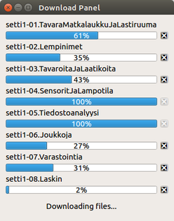

The DownloadPanel class is a top-level QWidget (a window) that is used to display the download progress of TMC exercises. More...
| Header: | #include <downloadpanel.h> |
| DownloadPanel(QWidget *parent = 0) | |
| ~DownloadPanel() | |
| void | addInfoLabel() |
| void | addReplyToList(QNetworkReply *reply) |
| void | addWidgetsToDownloadPanel(QString downloadName) |
| QNetworkReply * | getRepliesListItem(int index) |
| void | sanityCheck() |
| void | cancelDownload() |
| void | httpFinished() |
| void | networkReplyProgress(qint64 bytesReceived, qint64 bytesTotal) |
The DownloadPanel class is a top-level QWidget (a window) that is used to display the download progress of TMC exercises.

Each of the TMC exercises is packed and transferred as a separate zip archive. It's therefore typical to have multiple concurrent downloads. The DownloadPanel window displays a separate QProgressBar for each of them.
Class DownloadPanel doesn't have any data transfer functionality of its own. It just gives a visual indication of the downloads initiated by TestMyCode::on_download_okbutton_clicked().
Note: A slight problem with the progress bars is their inaccuracy. This is due to the signal QNetworkReply::downloadProgress(qint64 bytesReceived, qint64 bytesTotal). Each time it is emitted for an incomplete download the value of bytesTotal is -1 rather than the true download size. Whenever bytesTotal is -1 a progress bar has to resort to using the crude approximation AVERAGE_DOWNLOAD_SIZE.
Default constructs an instance of DownloadPanel.
Destroys the instance of DownloadPanel.
Adds an info or status label to the bottom of the DownloadPanel window. The info label is used for displaying short messages to the user. The function should only be called once after adding the rest of the widgets.
Appends reply to the end of list replies of type QList<QNetworkReply *>. There's also the QList instance variable progressBars which is of the same size as replies. Each element in replies corresponds to the element at the same index in progressBars.
Adds three widgets to the DownloadPanel window which have to do with a particular download. The widgets are a QLabel for naming the download, a QPushButton for cancelling the download and a QProgressBar for displaying the progress. The parameter downloadName is displayed in the QLabel.
[slot] void DownloadPanel::cancelDownload()Each of the download cancel buttons in the DownloadPanel window are connected to this slot.
Returns the QNetworkReply pointer specified by the index parameter. The pointer is an element in the QList instance variable replies.
[slot] void DownloadPanel::httpFinished()The signal QNetworkReply::finished is connected to this slot in TestMyCode::on_download_okbutton_clicked().
[slot] void DownloadPanel::networkReplyProgress(qint64 bytesReceived, qint64 bytesTotal)The signal QNetworkReply::downloadProgress is connected to this slot in TestMyCode::on_download_okbutton_clicked(). bytesReceived indicates the number of bytes received thus far by the QNetworkReply object that emitted the signal. bytesTotal is the total size of the download. If the value of bytesTotal is -1, the total download size is unknown.
There's a one-to-one correspondence between the items of the QLists progressBars and replies. It follows that the sizes of the lists are the same. If this is not the case, the function issues a qDebug warning.